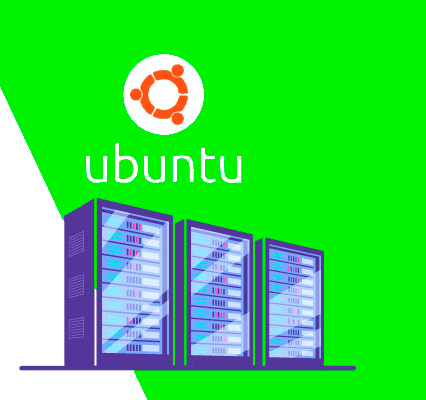

Ubuntu Server 20.04
O Ubuntu é um sistema operacional (pt-BR) ou sistema operativo (pt-PT) de código aberto, construído a partir do núcleo Linux, baseado no Debian e utiliza GNOME como ambiente de desktop de sua mais recente versão com suporte de longo prazo (LTS). É desenvolvido pela Canonical Ltda.
Geralmente é executado em computadores pessoais e também é popular em servidores de rede, geralmente executando a versão Ubuntu Server, com recursos de classe empresarial. Até 2017, o Ubuntu também estava disponível para tablets e smartphones, com a edição Ubuntu Touch.
Denominação
O nome "Ubuntu" deriva do conceito sul africano de mesmo nome, diretamente traduzido como "humanidade com os outros" ou "sou o que sou pelo que nós somos todos".
O nome "Ubuntu" busca passar a ideologia do projeto, baseada nas liberdades do software livre e no trabalho comunitário de desenvolvimento. O sistema é muito comumente chamado "Ubuntu Linux", porém, oficialmente a Canonical, desenvolvedora do sistema, usa apenas o nome "Ubuntu", uma vez que o sistema ao ser portado para outros núcleos livres para além do Linux recebe outros nomes (por exemplo, o Ubuntu implementado sobre o OpenSolaris recebe o nome de "Nexenta") - ao contrário do Debian, por exemplo, que recebe este nome independentemente do núcleo usado.
História
O Ubuntu é construído sobre a arquitetura e a infraestrutura do Debian, e compreende as versões de sistema operacional para telefones e tablets Linux, desktop e tablet descontinuados. O Ubuntu lança versões atualizadas previsivelmente a cada seis meses, e cada lançamento recebe suporte gratuito por nove meses (dezoito meses antes da versão 13.04) com correções de segurança, correções de bugs de alto impacto e correções de bugs conservadoras e substancialmente benéficas de baixo risco. O primeiro lançamento foi em outubro de 2004.
As versões atuais de suporte de longo prazo (LTS) são suportadas por cinco anos e são lançadas a cada dois anos. As versões LTS recebem lançamentos de pontos regulares com suporte para novo hardware e integração de todas as atualizações publicadas naquela série até o momento.
Pacotes Debian e Ubuntu não são necessariamente binariamente compatíveis entre si, no entanto, pacotes podem precisar ser reconstruídos a partir do código-fonte para serem usados no Ubuntu. Muitos desenvolvedores do Ubuntu também são mantenedores de pacotes-chave no Debian.
Ubuntu coopera com o Debian, empurrando as mudanças de volta para o Debian, embora tenha havido críticas de que isso não acontece com frequência suficiente. Ian Murdock, o fundador do Debian, expressou preocupação com os pacotes do Ubuntu divergindo muito do Debian para permanecerem compatíveis. Antes do lançamento, os pacotes são importados do Debian unstable continuamente e mesclados com modificações específicas do Ubuntu. Um mês antes do lançamento, as importações são congeladas e os empacotadores trabalham para garantir que os recursos congelados funcionem bem juntos.
Em 8 de julho de 2005, Mark Shuttleworth e a Canonical Ltd anunciaram a criação da Ubuntu Foundation e providenciaram um aporte inicial de US$ 10 milhões. A finalidade da fundação é garantir apoio e desenvolvimento a todas as versões posteriores a 5.10.
No dia 5 de maio de 2007, Matt Zimmerman anuncia o novo projeto da Canonical, o "Ubuntu Mobile and Embedded", que seria uma versão do Ubuntu otimizada para uso com o Dispositivo de Internet Móvel da Intel. A primeira versão, 8.04, foi lançada em 30 de julho de 2008, porém o projeto foi cancelado na versão 9.10 Alpha 6, lançada em 17 de setembro de 2009.
Desde o Ubuntu 17.10, o GNOME 3 é a GUI padrão do Ubuntu Desktop, enquanto o Unity ainda é o padrão em versões mais antigas, incluindo todas as versões atuais do LTS. A versão Ubuntu GNOME foi descontinuada após a versão padrão adotar este ambiente de desktop e os esforços de desenvolvimento foram combinados. Uma bifurcação do Unity 8, chamada Yunit, foi criada para continuar o desenvolvimento do Unity. Shuttleworth escreveu em 8 de abril de 2017
Imagem de instalação do servidor
Curiosidades
A imagem de instalação do servidor permite que você instale o Ubuntu permanentemente em um computador para uso como servidor. Ele não instalará uma interface gráfica de usuário.
Escolha isso se você tiver um computador baseado na arquitetura AMD64 ou EM64T (por exemplo, Athlon64, Opteron, EM64T Xeon, Core 2). Escolha isso se você não tiver certeza.